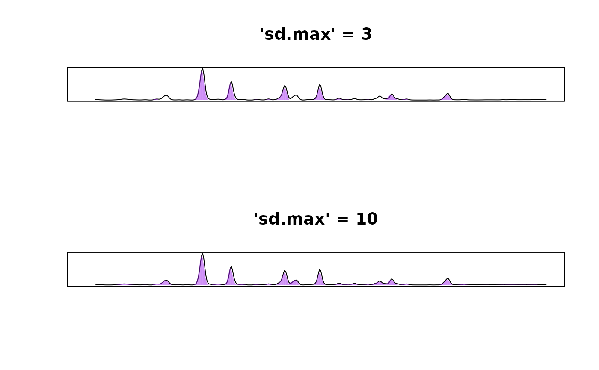

1. How should I format my data for analysis in
chromatographR?
chromatographR functions expect chromatograms to be in
wide format with retention times as rownames. Thus, if you have a csv
file with retention times in the first column, you should be able to
read the files into R as follows:
If you have chromatograms in “long” format, you will need to reshape them into wide format before proceeding with the analysis.
2. Some of my peaks aren’t being integrated when I run
get_peaks.
Try adjusting the value of the sd.max argument,
especially if you are seeing that your wider peaks are the ones that
aren’t being integrated. This argument controls the maximum peak width.
We have tried to set the default value (sd.max = 50) to a
sensible number, but what is “sensible” can vary with the resolution of
your data. For example, in the example shown below, wider peaks will not
be picked up with sd.max = 2.5 but if we increase
sd.max to 10, we are able to successfully
integrate all of our peaks. If this fails, try adjusting the
smooth_window.
data(Sa_pr)
par(mfrow=c(2,1))
pks <- get_peaks(Sa_warp, lambdas = "210", fit = "egh", sd.max = 2.5)
plot(pks, main = "'sd.max' = 3")
pks <- get_peaks(Sa_warp, lambdas = "210", fit = "egh", sd.max = 10)
plot(pks, main = "'sd.max' = 10")